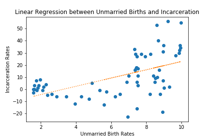
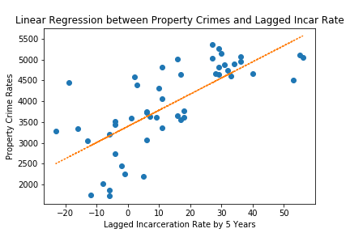
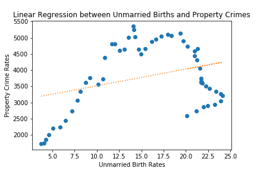
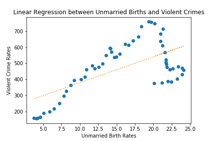

Comparisons
Incarceration Rate vs Birth Rate
This is comparison of the change in incarceration rate to birth rates of single mothers aged 20 and under. We can see that there is a slight positive correlation between them, however there is wide variability, so they might be correlated due to time.
Lagged Incarceration vs Property Crime
This is comparison of a lagged Incarceration Rate of 5 years and Property Crime. We can see that there is an extremely positive correlation between them, suggesting that public policy takes around 5 years to catch up.
Property Crime vs Birth Rate
This is comparison of property crime rate to birth rates of single mothers aged 20 and under. We can see that there is a slight positive correlation between them, however it looks that they might be correlated due to time.
Violent Crime vs Birth Rate
This is comparison of property crime rate to birth rates of single mothers aged 20 and under. We can see that there is a stronger positive correlation between them, leading me to believe that a violent enviornment might effect teen birth rates.